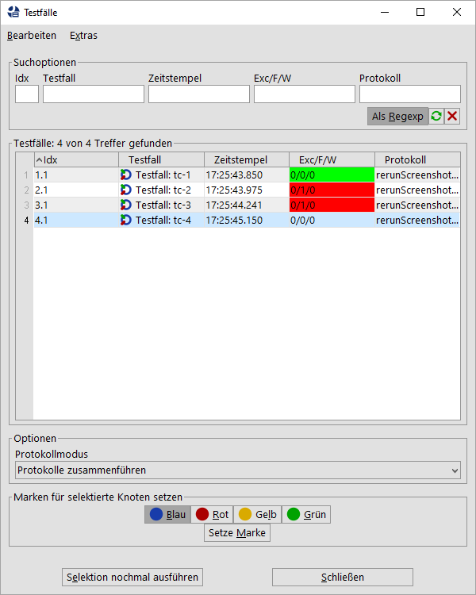

| Version 6.0.3 |
Nach einem automatischen Testlauf ist das Protokoll bzw. der erstellte Report dieser Ausführung ein guter Einstiegspunkt um sich ein Bild von den Testergebnissen zu machen. Sind Fehler aufgetreten, stellt sich für Sie als Anwender oft die Herausforderung die fehlgeschlagenen Testfälle nochmals auszuführen, um das Fehlverhalten zu analysieren oder nach einer erfolgten Fehlerbehebung diesen Testfall nochmals offiziell nachzutesten. Eventuelle Nachtestergebnisse könnten bei Bedarf auch im Report angezeigt werden und zwar wahlweise zusätzlich oder an Stelle des fehlerhaften Ergebnisses des vorherigen Laufs. In manchen Fällen kann es auch einfach vom Interesse sein, einige Testfälle nochmals gezielt mit dem Variablenstand vom vorigen Lauf anzustoßen und die vorherigen Protokolle unangetastet zu lassen.
Genau hierfür bietet QF-Test nun die Möglichkeit, direkt aus dem Protokoll heraus Testfälle
nochmals auszuführen. Dies erreichen Sie, indem Sie den Protokoll-Knoten oder die gewünschten
Testfallsatz Knoten selektieren und die Menüaktion
»Testfälle nochmal ausführen« im Menü »Bearbeiten« oder über
das Kontextmenü auswählen. Alternativ können sie die Testfälle aus der Fehlerliste
über den Kontextmenüeintrag
»Testfälle der selektierten Knoten nochmal ausführen« auswählen.
Im daraufhin erscheinenden Dialog
können Sie die nochmal auszuführenden Testfälle auswählen sowie in
der Auswahlbox Protokollmodus bestimmen, ob die Ergebnisse dieser Wiederholung
in das originale Protokoll des Laufes eingepflegt werden sollen oder nicht.
Es werden folgende Auswahlmöglichkeiten geboten:
|
|
|
||||||||||||
|
| Tabelle 22.1: Auswahlmöglichkeiten für die Protokollierung einer Wiederausführung | ||||||||||||
|
|  | ||
|
| Abbildung 22.1: Dialog zur Wiederausführung von Testfällen | ||
Diese wiederholte Ausführung verwendet für jeden Testfall dessen Variablenstände aus dem vorherigen
Protokoll. Die Variable ${qftest:isInRerunFromLog} erhält für eine solche Wiederholung den Wert
true, womit im Test zwischen normalem Lauf und Wiederholung unterschieden werden kann.
HinweisDie Zusammenführung der Protokolle basiert zur Zeit auf den Namen der Testfälle und Testfallsätze. Daher müssen deren Namen eindeutig sein. Im Falle von datengetriebenen Testen sollten Sie darauf achten, dass Sie diese Eindeutigkeit der Namen über die Attribute 'Name für separates Protokoll' bzw. 'Charakteristische Variablen' herstellen.
Während der Testautomatisierung kann es vorkommen, dass Testschritte sich volatil verhalten und manchmal das richtige Ergebnis liefern aber in anderen Fällen scheitern. Meist sind solche Fälle abhängig vom Timing und können in QF-Test mit 'Warten auf Komponente' Knoten oder Checks auf Zustände, mit Skripten, Verzögerungen oder Kontrollstrukturen stabilisiert werden. Alternativ oder zusätzlich ermöglicht QF-Test es Ihnen, solche Knoten im Fehlerfall automatisch nochmals auszuführen.
Für die Art der automatischen Ausführung im Fehlerfall können Sie bei jedem ausführbaren Knoten in der Testsuite einen Doctag im Attribut 'Bemerkung' verwenden. Dieser Doctag kann im Wesentlichen wie folgt aussehen:
|
|
|
|||
|
| Beispiel 22.18: Beispiel für eine Rerun Definition | |||
Das obige Beispiel bedeutet, dass ein Knoten im Falle eines Fehlers oder einer Exception maximal dreimal
wiederholt wird bis kein Fehler und keine Exception mehr auftreten.
Die Versuche, die mit Fehler oder Exception endeten, werden im Protokoll als
Warnung markiert und nicht mehr als Fehler. Nach jedem Versuch, der mit Fehler oder Exception endet, wird die
Prozedur handlers.errorhandler aufgerufen. Besteht nach dem dritten Versuch immer noch ein Fehler
oder eine Exception, so wird dieser letzte Zustand protokolliert.
Falls Sie den aktuellen Versuch des Reruns herausfinden möchten, können Sie die Variable reruncounter aus der qftest Variablengruppe verwenden, siehe Abschnitt 6.5.
Für das @rerun Doctag können verschiedene Parameter wie attempts
oder errorlevel mit folgender Bedeutung verwendet werden:
EXCEPTION, ERROR oder WARNING angeben, entweder
exakt (mit =) oder mit > oder >=. Mit
errorlevel=ERROR wird der Knoten nur bei Fehlern neu ausgeführt wird, bei
errorlevel>=ERROR bei Fehlern und Exceptions.
Falls Sie nichts angeben wird der Wert errorlevel>=ERROR als Standard herangezogen.
EXCEPTION, ERROR oder WARNING sowie zusätzlich
NOLOG und KEEP. Die Stufe NOLOG bedeutet, dass die fehlerhaften
Versuche
aus dem Protokoll gelöscht werden, so dass nur der letzte Versuch im Protokoll auftaucht. Der Wert
NOLOG sollte mit großer Vorsicht eingesetzt werden. Der Wert KEEP gibt an,
dass die originalen Fehlerstufen im Protokoll behalten werden.
Falls Sie nichts angeben wird der Wert WARNING als Standard herangezogen.
false wird der aktuelle Variablenstand genutzt.
true gesetzt, wird am Anfang eines jeden Versuchs sowie
nach erfolgreicher bzw. fehlerhafter Ausführung eine Nachricht in das Protokoll geschrieben. Zusätzlich
wird bei jedem Versuch eine Anmerkung im Protokoll für diesen Knoten gesetzt.
logmessages auf true gesetzt,
werden die Meldungen auch in den Report geschrieben.
true gesetzt wird, wird das erste gefangene Fehlerverhalten mit dem
Originalzustand protokolliert. Im Falle von weiteren Fehlern wird der Parameter newerrorlevel
herangezogen.
CheckFailedException oder nur ClientNotConnected für eine ClientNotConnectedException.
Dieser Parameter sollte nur verwendet werden, wenn Sie Exception als Wert für
errorlevel gesetzt haben. Details zu Exceptions finden Sie beim 'Catch' Knoten.
Exception als Wert für
errorlevel gesetzt haben. Details zu Exceptions finden Sie beim 'Catch' Knoten.
true ist, dann stellt der Parameter exceptionmessage einen regulären Ausdruck dar.
Dieser Parameter sollte nur verwendet werden, wenn Sie Exception als Wert für
errorlevel gesetzt haben und einen Wert für exceptionmessage angegeben haben.
Details zu Exceptions finden Sie beim 'Catch' Knoten.
true ist, dann steht der Parameter exceptionmessage
für die lokalisierte Fehlermeldung der Exception.
Dieser Parameter sollte nur verwendet werden, wenn Sie Exception als Wert für
errorlevel gesetzt haben und einen Wert für exceptionmessage angegeben haben.
Details zu Exceptions finden Sie beim 'Catch' Knoten.
| Letzte Änderung: 6.9.2022 Copyright © 1999-2022 Quality First Software GmbH |